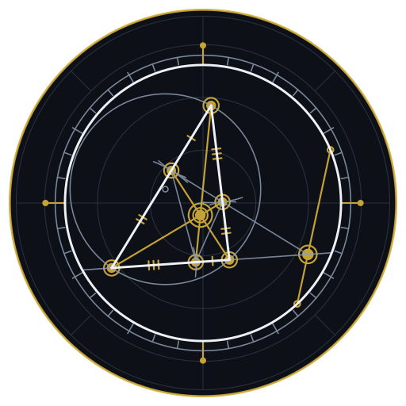

Giovanni Ceva¶

Giovanni Ceva (1647–1734) had a brilliant idea in 1678: what if you could prove straight lines meet at a single point simply by balancing imaginary weights at the corners of a triangle? Applying Archimedes’ law of the lever—and even introducing signed negative weights a century and a half before Möbius—Ceva turned statics into a master key for cevian concurrency, Menelaus transversals, conic contacts, and three-dimensional tetrahedral equilibrium.
Books in This Collection¶

Editio Princeps · Milan, 1678 · 4 Units · 4 Synchronized Tracks
On Straight Lines Mutually Intersecting (De lineis rectis se invicem secantibus statica constructio) — The complete 1678 Milan quarto across Statica Prolegomena, Liber Primus, Liber Secundus, and Appendix Geometrica, featuring 101 cropped copperplate figures, 22 calibrated interactive SVGs, and parallel English · Latin · Summary · Notes tracks.
Key Features¶
Archimedean Statics Meets Projective Geometry
Follow Ceva’s unified equilibrium proofs from two-weight levers to interior and exterior cevians, Caravaggio’s Euclidean parallel proofs, and seven-line concurrency in a tetrahedron.
Four-Track Bilingual Scriptorium
Compare faithful 1678 Milan Latin transcriptions (preserving Ludovico Monza’s dagger † and minus - notation) side-by-side with direct English translation, summaries, and notes.
Exact Static Barycentrics & Spread Ceva
Executable SymPy models in Symbolic Demonstrations verify signed weights, isotomic conjugates (\(X(7) \leftrightarrow X(8)\)), harmonic ranges, and radical-free Spread Ceva over \(\mathbb{Q}\).
Reference & Project¶
Scholarly Apparatus
People — Profiles of Giovanni Ceva, Archimedes, Menelaus, Pietro Paolo Caravaggio, and August Ferdinand Möbius
Bibliography — 1678 Milan editio princeps (BNCF Florence) and historical references
Concordance & Glossary — Cross-corpus links to Archimedes, Menelaus, Pappus, ETC, and Wildberger
About This Project
About — Provenance, 1678 typographic conventions, and symbolic architecture
Using This Edition — Multi-track switching, folio links, and search tips
Log & Modules — Development journal and Python API reference